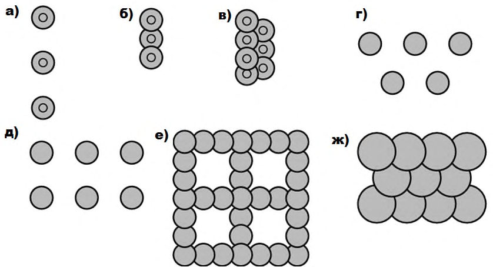
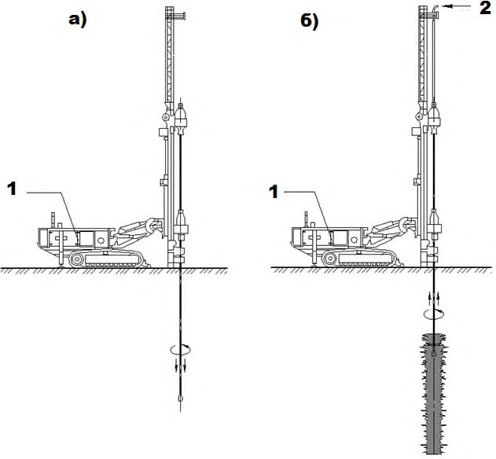
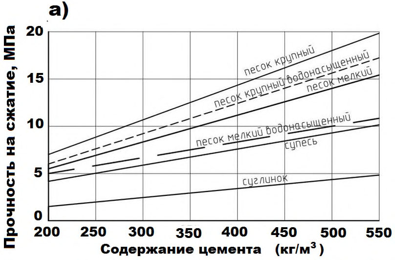
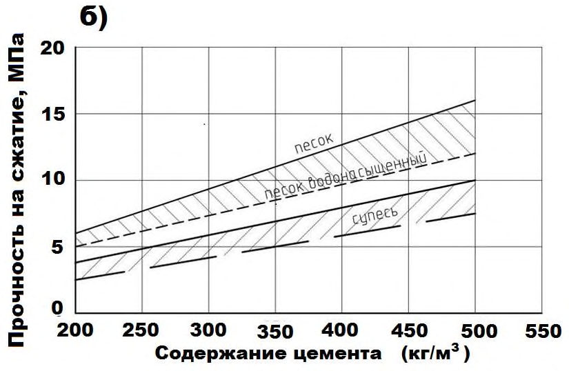
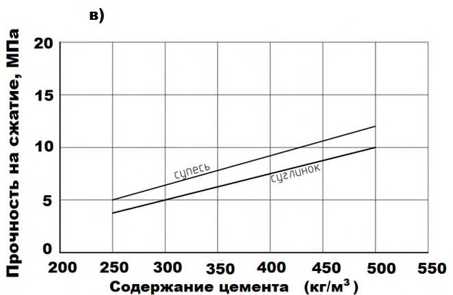
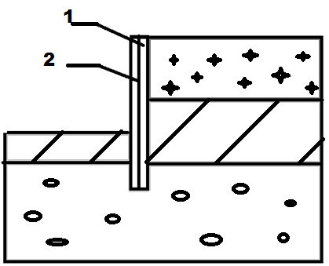
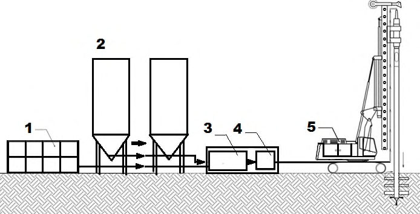
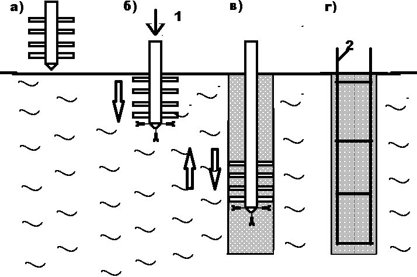
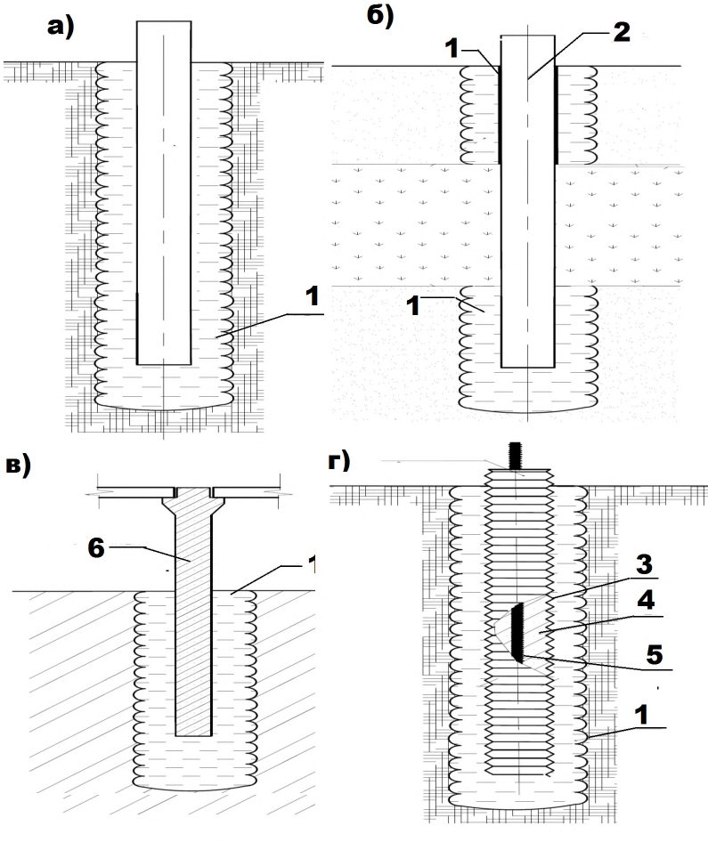
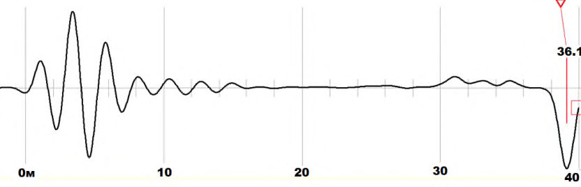

СП 291.1325800.2017 «Конструкции грунтоцементные армированные. Правила проектиро»
О документе: разработчики, утверждение, регистрация, ключевые слова
СВОД ПРАВИЛ
СП 291.1325800.2017
Издание официальное
1 ИСПОЛНИТЕЛИ - Акционерное общество «Научно-исследовательский центр «Строительство» (АО «НИЦ «Строительство»), НИИОСП им. Н.М. Герсеванова и НИИЖБ им. А.А. Гвоздева
- 2 ВНЕСЕН Техническим комитетом по стандартизации ТК 465 «Строительство»
- 3 ПОДГОТОВЛЕН к утверждению Департаментом градостроительной деятельности и архитектуры Министерства строительства и жилищнокоммунального хозяйства Российской Федерации (Минстрой России)
- 4 УТВЕРЖДЕН приказом Министерства строительства и жилищнокоммунального хозяйства Российской Федерации от 15 мая 2017 г. № 785/пр и введен в действие с 16 ноября 2017 г.
- 5 ЗАРЕГИСТРИРОВАН Федеральным агентством по техническому регулированию и метрологии (Росстандарт)
- 6 ВВЕДЕН ВПЕРВЫЕ
В случае пересмотра (замены) или отмены настоящего свода правил соответствующее уведомление будет опубликовано в установленном порядке. Соответствующая информация, уведомление и тексты размещаются также в информационной системе общего пользования - на официальном сайте разработчика (Минстрой России) в сети интернет
© Минстрой России, 2017
Настоящий свод правил на может быть полностью или частично воспроизведен, тиражирован и распространен в качестве официального издания на территории Российской Федерации без разрешения Минстроя России
Дата введения - 2017-11-16
УДК 69+ 624.154.04(083.74)
ОКС 93.020
Ключевые слова: грунтоцементные элементы, струйная технология закрепления грунтов, глубинное перемешивание, прочность цементогрунта
ОРГАНИЗАЦИЯ\_РАЗРАБОТЧИК
АО «НИЦ «Строительство»
| Заместитель генерального директора по научной работе АО НИЦ «Строительство» | Заместитель генерального директора по научной работе АО НИЦ «Строительство» | А.И.Звездов |
|---|---|---|
| Руководители разработки | Директор НИИОСП | И.В.Колыбин |
| Зам. директора НИИОСП | Д.Е. Разводовский | |
| Ответственный исполнитель | Зав. лабораторией НИИОСП | А.В. Скориков |
Введение
Настоящий свод правил разработан с учетом обязательных требований, установленных в Федеральном законе от 27 декабря 2002 г. № 184-ФЗ «О техническом регулировании», Федеральном законе от 29 декабря 2004 г. № 190-ФЗ «Градостроительный кодекс Российской Федерации», Федеральном законе от 30 декабря 2009 г. № 384-ФЗ «Технический регламент о безопасности зданий и сооружений» и содержит основные геотехнические требования к проектированию армированных грунтоцементных конструкций в различных инженерно-геологических условиях и при любых видах строительства.
Разработан НИИОСП им. Н.М. Герсеванова и НИИЖБ им. А.А. Гвоздева институтами АО «НИЦ «Строительство»: кандидаты техн. наук И.В. Колыбин , Д.Е. Разводовский -руководители темы; кандидаты техн. наук: Х.А. Джантимиров , Ф.Ф. Зехниев , М.Н. Ибрагимов , А.В. Рытов , А.В. Скориков , В.В. Семкин , А.В. Шапошников , М.Я. Якобсон , инж. Д.А. Внуков , при участии д-ра техн. наук В.А. Ильичева , д-ра техн. наук Н.С. Никифоровой , д-ра геол.-минерал. наук А.Г. Шашкина , канд. техн. наук А.Г. Малинина , канд. техн. наук О.А.Маковецкого , инж. П.А.Малинина .
1Область применения
Настоящий cвод правил устанавливает основные геотехнические требования и распространяется на проектирование армированных грунтоцементных конструкций, выполняемых в грунте по методу струйной цементации и глубинного перемешивания при строительстве и реконструкции зданий и сооружений в талых грунтах.
Настоящий свод правил не распространяется на проектирование конструкций в грунте, изготавливаемых с помощью инъекционных технологий с применением цементов и микроцементов, а также иных вяжущих материалов.
2Нормативные ссылки
В настоящем своде правил приведены ссылки на следующие нормативные документы:
ГОСТ 5686-2012 Грунты. Методы полевых испытаний сваями
ГОСТ 12071-2014 Грунты. Отбор, упаковка, транспортирование и хранение образцов
ГОСТ 21153.2-84 Породы горные. Методы определения прочности при одноосном сжатии
ГОСТ 24452-80 Бетоны. Методы определения призменной прочности, модуля упругости и коэффициента Пуассона
ГОСТ 27751-2014 Надежность строительных конструкций и оснований. Основные положения
ГОСТ 28570-90 Бетоны. Методы определения прочности по образцам, отобранным из конструкций
ГОСТ 28985-91 Породы горные. Методы определения деформационных характеристик при одноосном сжатии
СП 16.13330.2017 «СНиП II-23-81* Стальные конструкции»
- СП 22.13330.2016 «СНиП 2.02.01-83* Основания зданий и сооружений»
- СП 24.13330.2011 «СНиП 2.02.03-85 Свайные фундаменты» (с изменением № 1)
- СП 47.13330.2016 «СНиП 11-02-96 Инженерные изыскания для строительства. Основные положения»
СП 63.13330.2012 «СНиП 52-01-2003 Бетонные и железобетонные конструкции. Основные положения» (с изменениями № 1, № 2)
СП 103.13330.2012 «СНиП 2.06.14-85 Защита горных выработок от подземных и поверхностных вод»
Armed grouted structures. Rules of architectural design
Примечание - При пользовании настоящим сводом правил целесообразно проверить действие ссылочных документов в информационной системе общего пользования -на официальном сайте федерального органа исполнительной власти в сфере стандартизации в сети Интернет или по ежегодному информационному указателю «Национальные стандарты», который опубликован по состоянию на 1 января текущего года, и по выпускам ежемесячного информационного указателя «Национальные стандарты» за текущий год. Если заменен ссылочный документ, на который дана недатированная ссылка, то рекомендуется использовать действующую версию этого документа с учетом всех внесенных в данную версию изменений. Если заменен ссылочный документ, на который дана датированная ссылка, то рекомендуется использовать версию этого документа с указанным выше годом утверждения (принятия). Если после утверждения настоящего свода правил в ссылочный документ, на который дана датированная ссылка, внесено изменение, затрагивающее положение, на которое дана ссылка, то это положение рекомендуется применять без учета данного изменения. Если ссылочный документ отменен без замены, то положение, в котором дана ссылка на него, рекомендуется применять в части, не затрагивающей эту ссылку. Сведения о действии сводов правил целесообразно проверить в Федеральном информационном фонде технических регламентов и стандартов.
3Термины и определения
В настоящем своде правил применены следующие термины с соответствующими определениями:
- 3.1армированная грунтоцементная конструкция
- Конструкция, состоящая из одного или нескольких армированных грунтоцементных элементов.
- 3.2армированный массив грунта
- Естественный грунтовый массив, усиленный армирующими элементами.
- 3.3влажное механическое перемешивание
- Процесс, включающий перемешивание грунта специальным буровым инструментом и его перемешивание со строительным раствором, включающим воду, связующие с наполнителями и добавками.
- 3.4глубинное перемешивание
- Технология, позволяющая создавать грунтоцементные конструкции путем механического перемешивания грунтов в естественном залегании с твердеющим материалом без специального извлечения грунта на поверхность с помощью специального бурового устройства в процессе его погружения или извлечения с вращением.
- 3.5грунтоцемент, ГЦ
- Грунт , з акрепленный путем его перемешивания с цементным раствором методом струйной цементации или глубинного перемешивания и имеющий механические характеристики, заданные проектом.
- 3.6грунтоцементный элемент; ГЦЭ
- Объем грунта, закрепленный цементным вяжущим по методу струйной цементации или глубинного перемешивания, с приданием ему повышенной прочности и пониженной водопроницаемости, характеризуемый геометрическими параметрами и физико-механическими свойствами, назначенными при проектировании и подтвержденными опытными работами.
- 3.7грунтоцементные элементы с теряемыми буровыми штангами; ТБШ ГЦЭ
- Технология устройства грунтоцементных элементов путем прямого бурения на проектную длину с размыванием грунта цементным раствором при использовании в качестве бурового инструмента теряемых стальных трубчатых штанг с накатанной винтовой поверхностью.
- 3.8конструкция грунтоцементная
- Конструкция, состоящая из грунтоцементных элементов, устроенная в массиве грунта по методу струйной цементации или глубинного перемешивания , выполняющая определенные несущие и (или) ограждающие функции.
- 3.9прочность грунтоцемента
- Количественный показатель прочности на одноосное сжатие закрепленного грунта, воспринимающего осевую статическую нагрузку до состояния разрушения.
- струйная цементация (jet grouting)
- Закрепление грунта технологиями, позволяющими разрушать грунт струей цементного раствора (jet1), или струей цементного раствора, усиленной воздушным потоком (jet2), или струей воды с последующей подачей цементного раствора (jet3) для смешения его с грунтом и создания элемента из закрепленного грунта, обладающего заданными прочностными свойствами.Источник: СП 22.13330.2016, 3.40
- 3.11сухое механическое перемешивание
- Процесс, включающий перемешивание грунта специальным буровым инструментом с добавлением вяжущего вещества в виде порошка (без добавления воды).
- 3.12элемент закрепленного грунта
- Объем грунта, закрепленного каким-либо технологическим способом, характеризуемый контролируемыми геометрическими параметрами и физико-механическими свойствами, назначенными при проектировании и подтвержденными опытными работами.Источник: СП 22.13330.2016, 3.44
4Общие положения
4.1Общие требования
При наличии агрессивных подземных вод следует применять стойкие по отношению к ним цементы.
Примечание - Применение шлако-щелочных вяжущих, эффективных в глинистых грунтах, в настоящем своде правил не рассматривается.
Армированные грунтоцементные конструкции предназначены для устройства:
- элементов армирования оснований;
- ограждений котлованов;
- фундаментов линейных объектов строительства;
- анкерных креплений ограждений котлованов;
- отсечных геотехнических экранов;
- массивных конструкций;
- распорных дисков;
- горизонтальных и вертикальных противофильтрационных завес;
- усиления фундаментов зданий и сооружений;
- противооползневых конструкций на склонах и откосах.
- жестких арматурных элементов из металлопроката (круглых труб или прокатных профилей);
- арматурных каркасов из металлических стержней;
- буровых анкерных штанг с винтовой накатанной поверхностью, оставляемых при устройстве грунтоцементных элементов или анкерных свай;
- предварительно изготовленных железобетонных элементов, например, предварительно изготовленных сборных железобетонных свай.
Грунтоцементные конструкции допускается армировать трубами, прокатными профилями и арматурными каркасами большего диаметра с применением вибропогружателей.
При соответствующем обосновании допускается применять композитные материалы.
Грунтоцементные конструкции армируют путем размещения продольной арматуры соосно с проходкой или под наклоном.
- результатов инженерных изысканий для строительства;
- результатов работ на опытном или опытно-производственном участке;
- сопоставимого опыта выполнения работ;
- значений нагрузок, передаваемых на основание;
- технических условий, выданных всеми уполномоченными заинтересованными организациями.
- определение проектных требований и выбор технологии устройства;
- разработку программы дополнительных изыскательских работ с комплексом лабораторных и опытных полевых работ по устройству грунтоцементной конструкции;
- выбор конструктивной схемы и назначение требуемых характеристик грунтоцемента;
- назначение предварительных размеров грунтоцементной конструкции;
- выполнение расчетов и корректировка, при необходимости, размеров грунтоцементной конструкции;
- назначение расчетных параметров грунтоцемента, технологической последовательности работ;
- разработку графической части проекта, определение проектных объемов материалов и стоимости работ;
- проведение опытно-производственных работ, при необходимости, корректировка значений расчетных параметров и назначение рабочих параметров;
- авторское сопровождение работ по устройству грунтоцементной конструкции с участием в контрольных работах (СП 22.13330).
4.2Особенности инженерно-геологических изысканий
К составлению технического задания и согласованию программы инженерногеологических и инженерно-геотехнических изысканий необходимо привлекать специалистов, ответственных за геотехнические разделы проекта и производство работ.
По результатам проведения работ по укреплению грунта на опытных участках выполняется корректировка проектной документации на устройство армированных грунтоцементных элементов.
4.3Виды и способы устройства грунтоцементных элементов
- способом струйной цементации грунтов;
- методом глубинного перемешивания;
- комбинированными способами с совместным применением струйной цементации и глубинного перемешивания.
- отдельные элементы, выполняющие функцию закрепления грунтов для улучшения их физико-механических характеристик;
- элементы в составе армированного основания, выполняемые для обеспечения требуемых прочностных и деформационных характеристик основания в целом;
- элементы временных несущих и вспомогательных ограждающих конструкций котлованов;
- анкерные конструкции, работающие на выдергивающую нагрузку;
- элементы вертикальных и горизонтальных противофильтрационных завес;
- элементы вертикальных и горизонтальных геотехнических экранов;
- элементы временных и постоянных несущих конструкций основания, воспринимающих нагрузку от надфундаментных конструкций.
Основные виды армирования грунтоцементных конструкций приведены на рисунке 4.1.

а - двутавром; б - трубой; в - теряемыми буровыми штангами с накатанной винтовой поверхностью
Рисунок 4.1 - Способы армирования грунтоцементных элементов

Рисунок4.2 Способы устройства грунтоцементных элементов и конструкций
- круглое сечение, полученное при вращении монитора с одинаковой угловой скоростью;
- сечение в виде эллипса, полученного при вращении монитора с различной угловой скоростью;
- ламели, сформированное при подъеме монитора без вращения (плоское сечение).
4.4Элементы, выполняемые способом струйной цементации грунтов
- прямой ход: бурение лидерной скважины на проектную глубину;
- обратный ход: размыв в грунте по мере подъема инструмента (монитора) цилиндрической полости с одновременным перемешиванием грунта с цементным раствором (цементация);
- погружение армирующего элемента. а - бурение лидерной скважины до отметки низа элемента (прямой ход); б - устройство грунтоцементного элемента(обратный ход)

1 - буровая установка; 2 - цементный раствор
Рисунок 4.3 - Технология устройства грунтоцементных элементов
- однокомпонентная технология -разрушение грунта производится струей цементного (цементно-бентонитового или цементно-глинистого) раствора;
- двухкомпонентная технология - для увеличения объема закрепляемого грунта используется дополнительно энергия сжатого воздуха, создающего искусственный воздушный поток вокруг струи раствора;
- трехкомпонентная технология - разрушение грунта производится водной струей в искусственном воздушном потоке, а цементный раствор подается в виде отдельной струи;
- модернизированные технологии.
Предварительно диаметр грунтоцементных элементов допускается принимать по таблице 4.1.
Таблица 4.1
| Тип грунта | ТБШ ГЦЭ | Диаметр грунтоцементных элементов, мм, для технологии | Диаметр грунтоцементных элементов, мм, для технологии | Диаметр грунтоцементных элементов, мм, для технологии |
|---|---|---|---|---|
| Тип грунта | ТБШ ГЦЭ | однокомпонентной | двухкомпонентной | трехкомпонентной |
| Глинистые грунты | 200-300 | 500-600 | 1000-1300 | 1000-1500 |
| Песчаные грунты | 300-400 | 600-1000 | 1100-2000 | 1200-2000 |
| Гравелистые грунты | 350-450 | 700-1100 | 1000-1500 | 2000-2400 |
Примечание - При использовании более мощных насосов, буровых колонн и специальных форсунок можно получить грунтоцементные колонны диаметром 3000-4000 мм.
Примечание - Допустимо назначение длины грунтоцементных элементов до 100 м.
4.5. Элементы, выполняемые методом глубинного перемешивания
5Механические характеристики грунтоцемента и выбор технологических параметров
5.1. Прочностные и деформационные характеристики грунтоцемента
- прочность на одноосное сжатие Rstb ;
- угол внутреннего трения закрепленного массива stb ;
- сцепление закрепленного массива с stb ;
- модуль деформации Еstb , МПа;
Допускается определение класса прочности грунтоцемента с использованием переходного коэффициента kt :
- для глинистых грунтов
- для песчаных грунтов
При этом ks принимается равным 70-100 для глин и суглинков, 150-200 для супесей, 200-300 для песков пылеватых и мелких, 300-500 для песков средней крупности и крупных, 500-800 для песков гравелистых.
Для грунтоцементных элементов, изготовленных методом глубинного перемешивания, допускается использовать значения по приложению Е.
Таблица 4.2
| Тип грунтов | Прочность на сжатие, МПа |
|---|---|
| Глинистые | 0,5-3,0* |
| Илистые | 5-25 |
| Песчаные | 3,0-15,0* |
| Гравелистые | 5-30 |
| Торф и ил | 0,4-2,0* |
Примечания
- 1 Прочностные характеристики грунтоцемента зависят от физикомеханических свойств грунта, а также от расхода цемента, определяемого, в том числе, применяемой технологией.
- 2 Характеристики грунтобетона, полученного при использовании двухкомпонентной технологии (jet2) по сравнению с однокомпонентной(jet1), ниже примерно на 10 %.
- 3 Для достижения максимальных значений показателей прочностных деформационных свойств цементогрунта необходимо принимать максимальный расход цемента на 1 м³ .
Значение угла внутреннего трения stb должно приниматься в диапазоне от 24 до 33 в соответствии с таблицей 5.1.
Таблица 5.1 Рекомендуемые значения угла внутреннего трения stb грунтоцемента в зависимости от его прочности
| R stb , МПа | stb ,II | stb ,I |
|---|---|---|
| 1 | 26 | 24 |
| 5 | 27 | 25 |
| 10 | 29 | 26 |
| 15 | 31 | 28 |
| 20 | 33 | 30 |
Для грунтоцементных элементов, изготовленных методом глубинного перемешивания, допускается использовать значения, приведенные в приложении Е.
Значение коэффициента надежности для грунтоцемента при сжатии при расчете по первому предельному состоянию sb следует принимать равным 1,5 для грунтоцементных элементов, выполненных по методу механического глубинного перемешивания, и 1,75 для грунтоцементных элементов, выполненных по методу струйной цементации. При расчете по второму предельному состоянию sb следует принимать равным 1.
5.2Выбор технологических параметров
- диаметр грунтоцементного элемента , м;
- суммарный (полный) расход цемента на 1 пог. м закрепляемого грунта , кг/м;
- давление нагнетания раствора, МПа;
- водоцементное отношение WC.
В слабых органических грунтах (илы, торфы) расход цемента должен составлять от 800 до 1000 кг/м³ для почти полного замещения грунта цементным раствором. Кроме того, в таких грунтах может выполнять предварительный размыв грунта водой с добавлением 1 % - 5 % технической соды.
Для глубинного перемешивания расход цемента может назначаться по таблицам Е.1 и Е.2 и подтверждаться результатами лабораторных и опытных работ.
В проекте следует указывать требования о необходимости постоянного обеспечения выхода грунтоцементной пульпы на поверхность в ходе производства работ. Следует учитывать, что в случае отсутствия выхода пульпы на поверхности она может заполнить существующие полости в грунте (старые коммуникации или подвалы старых зданий) и привести к вертикальным или горизонтальным гидроразрывам.
Примечание - В отдельных случаях применение добавок позволяет увеличивать эффективный диаметр получаемого грунтоцементного элемента на 10 % - 15 %, повышать однородность грунтобетона и снижать водоцементное отношение раствора с 1,0 до 0,7-0,8 при неизменном применяемом оборудовании и обычных режимах его работы.
6Расчет грунтоцементных конструкций
6.1Основные указания по расчету грунтоцементных армированных конструкций
первой группы
а) по прочности материала закрепленного массива; б) по предельному сопротивлению грунта основания закрепленного массива; в) по потере общей устойчивости усиленных оснований при их расположении на склонах или при устройстве ограждений котлованов.
второй группы
а) по осадкам укрепленных оснований от вертикальных нагрузок; б) по перемещениям укрепленных оснований от действия горизонтальных нагрузок и моментов.

Рисунок 6.1 - Зависимость расхода цемента для обеспечения прочности грунтоцемента различных видов грунтов
Примечания
1 Прочность на сжатие грунтоцемента при расходе цемента более 500 кг/м³ определяется только на основании опытных работ.
- 2 Прочность грунтоцемента, получаемого по двухкомпонентной технологии, следует принимать на 10 % - 15 % меньше значений, указанных на графике.
- где kw - коэффициент перехода от содержания цемента в грунтоцементе к расходу цемента для получения материала с заданным содержанием цемента (значение прочности по проекту), принимается на этапе проектирования равным 1.1-1,33 для струйной цементации грунтов и 1,0 - для глубинного перемешивания;
- Ncc - проектное содержание цемента в грунтоцементе для получения требуемой прочности, принимаемое на этапе проектирования по графикам на рисунке 6.1 и уточняемое по результатам лабораторных и опытно-производственных работ, кг/м³ . При проектировании грунтоцементных элементов в слабых, агрессивных, заторфованных и иных грунтах, а также при необходимости полного замещения грунта проектное содержание цемента Ncc следует задавать по объему замещаемого грунта, а при неполном замещении, но повышенных требованиях по прочности, по результатам лабораторных работ с корректировкой по результатам опытных работ.
6.2Расчет изгибаемых грунтоцементных армированных конструкций
6.3Расчет внецентренно нагруженных армированных грунтоцементных элементов
где Fmg - несущая способность грунтоцементного элемента по материалу, кН; γ m = 0,9 - коэффициент условия работы грунтоцемента;
Rb - расчетное сопротивление грунтоцемента осевому сжатию, кПа;
Ab - площадь поперечного сечения грунтоцементного элемента, м² ;
Ra - расчетное сопротивление металла сжатию, кПа;
Aa - площадь поперечного сечения армирующего элемента, м² .
6.4Особенности учета грунтоцементных конструкций при проведении фильтрационных расчетов и гидрогеологическом прогнозе
Геофильтрационная схематизация должна включать в себя следующие основные разделы:
- обоснование режима потока во времени;
- обоснование пространственной структуры потока;
- обоснование граничных условий потока;
- обоснование распределения внутренних источников и стоков;
- обоснование пространственного распределения фильтрационных параметров.
На этапе геофильтрационной схематизации должны быть обоснованы фильтрационные характеристики ограждения из грунтоцементных свай. Оптимальным является их задание на основе натурных определений проницаемости ограждения на площадке строительства. В случае отсутствия натурных данных допускается задание для ограждения следующих значений параметра перетока (отношение коэффициента фильтрации грунтоцементного материала к толщине ограждения):
- 0,05 сут -1 (для 2-рядного ограждения) и 0,01 сут -1 (для 3-рядного ограждения) - при расчетах строительного водопонижения и постоянных дренажей;
- 1∙10 -6 сут -1 - при расчетах барражного эффекта.
где п - коэффициент надежности для диафрагм и завес, принимаемый равным 1,5 -для временных конструкций; 2,0 -для постоянных конструкций;
H - перепад уровней воды перед и за противофильтрационной диафрагмой или завесой;
- Jkp - критический градиент напора, при котором наступает разрушение материала диафрагмы и завесы.
где Нw - гидростатическое давление на подошву горизонтального экрана в естественных условиях; gw - объемный вес воды, т/м³ ; gjet - объемный вес грунтоцемента, т/м³ ; hjet - расчетная мощность горизонтальной завесы и грунтового пригруза, м.
Мощность горизонтальной противофильтрационной завесы из грунтоцемента должна составлять не менее 1,5 м.
7Требования по устройству грунтоцементных конструкций
7.1Общие конструктивные требования
- варьирование свойств закрепляемого грунта;
- неопределенности в условиях перемешивания грунтоцемента;
- характеристики перемешивающего инструмента и процесса перемешивания;
- тип и количество вяжущего.
Допускается корректировка проектных решений в процессе производства работ в случае невозможности достижения проектных требований к грунтоцементным элементам, а также применение наблюдательного метода при устройстве армированных грунтоцементных конструкций.
7.2Проектирование горизонтальных грунтоцементных дисков и противофильтрационных экранов, устраиваемых с помощью технологии струйной цементации
- в качестве временных распорных конструкций, устраиваемых до начала экскавации котлована;
- в качестве горизонтальных экранов - при отсутствии на площадке водоупора, в который может быть заглублена ограждающая конструкция котлована.
Шаг элементов для горизонтальной противофильтрационной завесы по треугольной сетке рассчитывается по формуле
где I - шаг элементов;
D - диаметр грунтоцементных элементов; δ - возможное отклонение от вертикали (1 % -5 %);
H - максимальная глубина бурения.
Отношение шага к диаметру элемента ( I / D ) рекомендуется принимать равным 0,5-0,7.
7.3Проектирование усиления существующих фундаментов с помощью грунтоцементных элементов
7.4Проектирование грунтоцементных анкеров и несущих армирующих элементов
- удержания подпорных конструкций;
- обеспечения устойчивости откосов, котлованов и выработок в грунте;
- восприятия сил всплытия, действующих на подземные сооружения.
- разрушение армирующего элемента;
- разрушение узла крепления анкера;
- разрушение по контакту корня грунтоцементного анкера с грунтом;
- нарушение контакта анкера с материалом корня.
Антикоррозионная защита грунтоцементных анкеров с теряемой буровой штангой должна проектироваться с учетом агрессивности подземных вод и грунтов. В качестве средств антикоррозионной защиты возможно использование армирующих элементов из специальных сталей или увеличение сечения армирующего элемента с учетом развития коррозии в зависимости от срока эксплуатации анкера.
Устройство временных анкеров допускается выполнять с помощью струйной технологии и ТБШ ГЦЭ.
При проектировании напрягаемых анкеров необходимо исключить образование случайных уширений между корнем анкера и ограждающей конструкцией котлована.
Несущая способность грунтоцементных анкеров должна определяться на основании проведения их статических испытаний.
Штанги соединяются между собой муфтами, оснащенными герметизирующими элементами, обеспечивающими подачу цементного раствора под давлением до 30 МПа.
Теряемое буровое долото, выполняющее функцию монитора, должно быть оснащено форсунками.
Примечание - Стандартная длина штанг составляет 3,0 м. В стесненных условиях допускается применение штанг длиной 2,0, 1,5, 1,0 м.
7.5Проектирование ограждений котлованов из грунтоцементных элементов

1 - грунтоцементный элемент; 2 - армирующий элемент
Рисунок 7.1 - Расчетная схема для решения задачи определения усилий в армирующих элементах
где I - шаг элементов;
D - диаметр грунтоцементных элементов; δ - возможное отклонение от вертикали (1 % - 5 %);
H - максимальная глубина бурения.
Отношение шага к диаметру элемента ( I / D ) обычно составляет 0,5-0,7.
8Опытные и контрольные работы
8.1Организация работ на опытном участке
- изготовление опытных ГЦЭ;
- контроль качества опытных ГЦЭ;
- контроль геометрических размеров ГЦЭ;
- уточнение прочностных и деформационных характеристик ГЦЭ;
- оценка несущей способности ГЦЭ по грунту и материалу.
Для сооружений 1 уровня ответственности, уникальных сооружений, а также объектов 3 геотехнической категории число опытных ГЦЭ должно составлять не менее 9 шт. и не менее трех для 1 и 2 геотехнической категории.
- контроль формы сечений ГЦЭ в шурфах;
- отбор кернов из ГЦЭ в любых точках поперечного и продольного сечений;
- контроль сплошности грунтоцементного массива методом контрольного бурения (зондирования);
- испытания отдельных ГЦЭ или массива из нескольких ГЦЭ статическими нагрузками.
- определение расчетных технологических параметров устройства опытных ГЦЭ;
- изготовление опытных ГЦЭ;
- контроль качества опытных ГЦЭ;
- оценка несущей способности ГЦЭ по грунту и материалу;
- корректировка значений технологических параметров изготовления ГЦЭ при несоответствии проектных значений характеристик ГЦЭ (при необходимости), назначение новых расчетных параметров изготовления ГЦЭ;
- изготовление опытных ГЦЭ по новым расчетным параметрам;
- контроль качества опытных ГЦЭ, выполненных по новым расчетным параметрам;
- назначение рабочих технологических параметров изготовления рабочих ГЦЭ.
- техническое задание (проектная организация) и программу опытных работ (производитель работ или организация-разработчик ППР);
- исполнительную документацию по опытным работам, включающую в себя акты скрытых работ, исполнительные схемы, колонки контрольных скважин, акты лабораторных испытаний образцов из кернов (производитель работ);
- откорректированные значения технологических параметров изготовления ГЦЭ (производитель работ).
8.2Отбор кернов и испытания грунтоцементных конструкций
Примечание - При отборе кернов с глубины более 5 м возможен выход бурового инструмента из тела грунтоцементного элемента в связи со статистическим отклонением скважин от вертикали на 1 % - 5 %.
Для получения качественного неразрушенного керна отбор желательно выполнять станками алмазного бурения.
Испытания должны проводиться на отдельном ГЦЭ или с включением массива грунта (ячейки периодичности). Размеры штампов для испытаний отдельного элемента должны быть не менее 5 000 см² , для испытания массива укрепленного грунта размеры штампа должны определяться ячейкой периодичности.
Число испытаний зависит от уровня ответственности сооружения, геологических условий площадки, уровня нагруженного эффекта в основании и ряда других факторов, но должно быть не менее двух.
Испытания следует выполнять статической вдавливающей нагрузкой в соответствии с ГОСТ 5686. По результатам испытаний определяют нормативное значение несущей способности элемента закрепленного грунта или участка грунтоцементной конструкции. Расчетное значение несущей способности по грунту определяют в соответствии с СП 24.13330.
АПриложение А. Технологическая схема производства работ по технологии глубинного перемешивания грунтов
А.1 Выполнение работ по способу глубинного перемешивания состоит в механическом перемешивании грунта и цемента и создании грунтоцементных элементов механическим образом. Во время погружения бурового инструмента производится рыхление и размельчение грунта на необходимую глубину. В процессе извлечения в грунт подается связующее вещество. Вращением в горизонтальной плоскости производится перемешивание грунта со связующим веществом. Связующее вещество может подаваться как на стадии погружения рабочего инструмента, так и на стадии возврата.
Глубинное смешивание может осуществляться двумя различными способами:
- сухим, при котором связующее подается с помощью сжатого воздуха;
- влажным, при котором связующее подается в виде раствора.
При сухом способе в качестве связующего используют смесь цемента и негашеной извести. Для подачи (введения) связующего в грунт используют воздух. Влажность грунта должна быть > 20 %.
При влажном способе смешивания в качестве связующего чаще всего используют цемент.
Сухое смешивание применяется, в первую очередь, для улучшения механических характеристик связных грунтов, влажный способ может также применяться для закрепления песчаных грунтов.

1 - емкость для воды; 2 - комплект силосов для вяжущего и добавок; 3 - растворосмеситель; 4 - насос; 5 -буровая установка
Рисунок А.1 - Технологическая схема глубинного перемешивания грунта а - установка бурового оборудования в рабочее положение; б - погружение в грунт смесителя до проектной отметки вращательным бурением и нагнетание цементного раствора через смеситель для смешения с грунтом; в - повторные циклы погружения и извлечения смесителя; г - погружение армирующих конструкций (отдельные стальные стержни, арматурные каркасами, стальные балками или трубы); 1 - раствор; 2 - армирующие конструкции

Рисунок А.2 - Технологическая схема глубинного перемешивания грунта
БПриложение Б. Состав проекта по устройству грунтоцементных элементов
Б.1 Разработка проекта с использованием армированных грунтоцементных элементов должна выполняться в соответствии с требованиями единой системы конструкторской документации и действующих нормативных документов, оформление чертежей должно соответствовать требованиям национальных стандартов системы проектной документации для строительства.
- Б.2 Проект должен включать в себя следующие разделы:
- конструктивные решения;
- проект организации строительства;
- технические решения по проведению работ на опытном участке;
- иная документация.
Б.3 Проектная документация должна состоять из текстовой и графической частей.
Текстовая часть должна включать в себя сведения по возводимому объекту, описание геологических условий, а также технических решений, пояснения, ссылки на нормативные и (или) технические документы, используемые при подготовке проектной документации и результаты расчетов, обосновывающие принятые решения. Требования по проведению работ на опытном или опытно-производственном участке должны содержать перечень контролируемых и уточняемых параметров. Графическая часть должна отображать принятые технические решения в виде чертежей, схем, планов.
- Б.4 Проектная документация на армированные грунтоцементные конструкции должна разрабатываться специализированной организацией, имеющей опыт проектирования грунтоцементных конструкций.
Разработанные конструктивные решения должны включать в себя:
- описание и обоснование конструктивных решений и расчетных схем по грунтоцементным конструкциям, принятых при расчете строительных конструкций:
- геометрические характеристики грунтоцементных конструкций (диаметр, угол наклона, длина, шаг);
- требуемые значения показателей прочностных и деформационных свойств грунтоцемента (прочность на одноосное сжатие или модуль деформации);
- значения расчетных нагрузок на грунтоцементную конструкцию (вертикальные, горизонтальные, выдергивающие, изгибающие моменты);
- деформации оснований и грунтовых массивов, включающих в себя грунтоцементные конструкции (вертикальные, горизонтальные, крены);
- расчетные технологические параметры изготовления грунтоцементных конструкций (давление, расход цемента).
Б.5 Раздел «Проект организации строительства» для проектирования фундаментных конструкций и оснований из ГЦЭ разрабатывается как для нового строительства, так и для реконструкции или иных условий (мероприятия для существующих объектов при необходимости их усиления или защиты от различного вида воздействий) и состоит из пояснительной записки, графической части и технологического регламента выполнения работ по устройству конструкций из ГЦЭ.
В технологическом регламенте указываются:
- расчетные технологические параметры изготовления ГЦЭ;
- очередность выполнения работ по устройству ГЦЭ на объекте;
- требования (задание) на выполнение опытных работ;
- требования по контролю качества ГЦЭ на этапе опытных работ и основных работ по изготовлению ГЦЭ.
Б.6 Раздел «Иная документация» для проектирования фундаментных конструкций и оснований из ГЦЭ разрабатывается для сохранности окружающей застройки, иных защитных и вспомогательных мероприятий при новом строительстве или реконструкции и состоит из:
- пояснительной записки, включающей разделы по Б.3настоящего приложения;
- графической части, учитывающей требования Б.3 настоящего приложения;
- отчетных материалов опытных работ, если они предусмотрены на этапе изысканий.
Б.7 Графическая часть проектной документации на грунтоцементные конструкции, изготавливаемые по технологии глубинного перемешивания грунтов, в общем виде, должна содержать:
- масштабные инженерно-геологические планы и характерные разрезы с нанесением осей объекта капитального строительства, проектных контуров и размеров зон устройства грунтоцементных элементов и их абсолютных отметок, а также данные по физикомеханическим свойствам грунтов;
- план расположения грунтоцементных конструкций с привязкой их осей к осям объекта капитального строительства, конструктивные разрезы с привязкой к инженерногеологическим условиям (колонкам), спецификации грунтоцементных конструкций (номер, угол наклона, отметка верха и низа конструкции, диаметр, длина, число, общая длина), ведомости объемов работ и материалов.
ВПриложение В. Вяжущие вещества, применяемые при глубинном перемешивании
Таблица В.1
| Тип грунта | Применяемое вяжущее |
|---|---|
| Глина Пластичная глина | Известь или известково-цементная смесь |
| Органические глины и ил | Известково-цементная смесь или смесь цемента с гранулированным доменным шлаком или известково-гипсовая смесь, цемент |
| Торф | Цемент или смесь цемента с гранулированным доменным шлаком или смесь цемента, извести и гипса |
| Сульфатные грунты | Цемент или смесь цемента с гранулированным доменным шлаком, сульфатостойкий цемент |
| Наносы ила | Известково-цементная смесь или цемент |
При влажном смешивании в большинстве случаев применяется обычный портландцемент. Для грунтов с высоким содержанием органики или для слабых глинистых грунтов могут применяться особые связующие. Смеси зольной пыли, гипса и цемента могут применяться, если требуется прочность обрабатываемого грунта 1-3 МПа.
ГПриложение Г. Устройство армированных грунтоцементных элементов
Грунтоцементный элемент с развитой боковой поверхностью имеет значительное предельное сопротивление грунтового основания, при этом может наблюдаться дефицит прочности по материалу. Армирование позволяет сблизить значения сопротивления грунтового основания и прочности ствола и добиться за счет этого оптимальных с точки зрения материалоемкости проектных решений.
Г.1 Преимущество железобетонных элементов по сравнению с металлическими (при их использовании в качестве постоянных конструкций) заключается в их коррозионной стойкости в неоднородном высокопористом материале, каким является грунтоцемент. Второе преимущество - возможность оснащать сердечники «рубашками» для образования антисейсмического и разделительного зазоров на части боковой поверхности.
- Г.2 Армированные грунтоцементные комбинированные сваи целесообразно применять в следующих случаях:
- ленточных и групповых фундаментов под сильно нагруженные сооружения больших размеров в плане;
- безростверковых свайных фундаментов;
- свайных фундаментов с высоким ростверком, в том числе свай-колонн, в том числе в мерзлых грунтах;
- свай в проседающих и оседающих массивах, в том числе на намывных территориях;
- свайных фундаментов в сейсмических районах.
- Г.3 Сборный железобетонный высокопрочный сердечник позволяет заменить буровую сваю значительно большего сечения, при этом, грунтоцементный элемент в песчаных грунтах обеспечивает высокое предельное сопротивление.
- Г.4 Задача уменьшения негативного трения в оседающих и проседающих массивах грунта существенно упрощается за счет возможности размещения на части длины сердечников разделительного антифрикционного слоя из поролона, пенополистирола и др.
В сейсмических районах разделительный слой расчетной толщины на боковой поверхности сердечников позволяет создавать эффект «гибкого» подземного этажа и снижения сейсмических нагрузок.
Г.5 Армирование стальными арматурными стержнями или сварными каркасами допускается для временным конструкций, например, ограждений котлованов. Для постоянных конструкций следует применять мероприятия по антикоррозионной защите металла. В частности, пластиковые гофрированные трубки, заполненные цементным или полимерцементным раствором, надежно защищают арматуру и повышают коэффициент использования за счет увеличения площади боковой поверхности металлического сердечника. Металлические сердечники из проката черных металлов могут защищаться оцинкованием или специальными покрытиями.

а - схема комбинированной сваи с сердечником; б - схема комбинированной сваи в намывных и просадочных грунтах; в - схема комбинированной сваи с железобетонной колонной в качестве сердечника; г - схема комбинированной сваи с защитой арматурного сердечника
1 - ГЦЭ; 2 - железобетонный сердечник; 3 - гофрированная пластиковая защитная труба; 4 мелкозернистый бетон; 5 - стальной арматурный стержень периодического профиля
Рисунок Г.1 - Типы армирующих элементов
ДПриложение Д. Определение длины и сплошности грунтоцементного элемента геофизическими методами
Определение длины и сплошности грунтоцементного элемента без выбуривания кернов может выполняться сейсмоакустическими методами.
Основной метод проведения испытаний по определению длины и сплошности грунтоцементного элемента - проверка эхо-тестером. Он основан на измерении времени между интервалами излучения упругой продольной волны в грунтоцементном элементе и прихода отраженных волн. Отраженная продольная волна возникает в местах изменения механического импеданса (механический импеданс пропорционален скорости продольной волны в свае и площади поперечного сечения). В однородном грунтоцементном элементе скорость постоянна и там, где находится нижний конец сваи, происходит отражение волны. В случае нарушения сплошности грунтоцементного элемента фиксируется локальное отражение сигнала.
Длина грунтоцементного элемента L вычисляется, исходя из измеренных интервала времени t и скорости распространения продольной волны в грунтоцементе Vp . Скорость распространения продольной упругой волны в грунтоцементе Vp принимается равной 3600 м/с.
Для проведения испытаний применяется выровненная горизонтальная поверхность оголовка грунтоцементного элемента. Приемник эхо-тестера устанавливается и закрепляется на поверхности. Возбуждение упругой продольной волны выполняется механическим воздействием темпером (молотком) по поверхности в продольном направлении. Фиксируется интервал времени между начальным воздействием и приходом отраженного эхо-сигнала. Измерение выполняется с повторяемостью не менее шести раз в разных местах сечения, с накоплением данных по одной точке 6-8 раз. Точность определения длины грунтоцементного элемента зависит от шага квантования сигнала, равного 20 мкс и составляет 0,1 м. Прохождение сейсмоакустического сигнала по телу грунтоцементного элемента фиксируется с помощью рефлектограммы (пример рефлектограммы приведен на рисунке Д.1 (приложение Д)) по которой определяется сплошность материала.
Рисунок Д.1 - Пример рефлектограммы прохождения сейсмоакустического сигнала по грунтоцементному элементу длиной 39 м

Дополнительный контрольный метод определения длины грунтоцементного элемента - метод регистрации дифрагированной волны.
При распространении по телу грунтоцементного элемента упругой продольной волны, нижнее сечение элемента является источником дифрагированной волны, распространяющейся к поверхности земли. Измеряя время прохождения дифрагированной волны от низа грунтоцементного элемента до приемника на поверхности земли можно определить длину грунтоцементного элемента
где Vr - скорость распространения упругих волн в грунте от нижнего сечения до поверхности земли, определяется на испытательной площадке; t r - время распространения упругих волн в грунте от нижнего сечения до поверхности земли
где Vp - скорость распространения упругих волн в грунтоцементном элементе от верхнего до нижнего сечения; t 0 - суммарное время распространения упругих волн от верхнего сечения до земной поверхности.
Фиксирование прихода дифрагированной волны на поверхности выполняется с помощью размещенных в линию вертикально ориентированных сейсмодатчиков и записывающей сейсмостанции высокой частоты дискретизации (15 кГц). Число приемных датчиков 8-10 шт., расстояние между датчиками 2,0 м. Возбуждение упругой продольной волны выполняется механическим воздействием темпером (молотком) по горизонтальной поверхности оголовка грунтоцементного элемента в продольном направлении. Фиксируется интервал времени между начальным воздействием и приходом дифрагированной волны. Измерение выполняется с повторяемостью не менее шести раз, без изменения расстановки сейсмоприемников. Точность определения длины грунтоцементного элемента составляет 0,1 м. Прохождение сейсмоакустического сигнала в грунте регистрируется на сейсмограмме (пример сейсмограммы приведен на рисунке Д.2 (приложение Д)).
Рисунок Д.2 - Пример сейсмограммы с регистрацией дифрагированной волны

ЕПриложение Е. Прочностные и деформационные характеристики грунтоцемента, полученного методом глубинного перемешивания
Таблица Е.1 Ориентировочные значение модуля деформации грунтоцемента Еstb , МПа, из грунтов, укрепленных портландцементом ПЦ 500 (при обработке грунта глубинным перемешиванием)
| Вид укрепляемых грунтов | Дозировка цемента, %по массе (кг/м³ ) | Дозировка цемента, %по массе (кг/м³ ) | Дозировка цемента, %по массе (кг/м³ ) | Дозировка цемента, %по массе (кг/м³ ) | Дозировка цемента, %по массе (кг/м³ ) | Дозировка цемента, %по массе (кг/м³ ) |
|---|---|---|---|---|---|---|
| Вид укрепляемых грунтов | 4-6 (80- 120) | 6-8 (120- 160) | 8-10 (160- 200) | 10-12 (200- 240) | 12-14 (240- 280) | 14-16 (280- 320) |
| 1 Песчано-гравийные и щебеночные смеси оптимального гранулометрического состава | 80-110 | 100-140 | 120-180 | 150-210 | - | - |
| 2 Гравийные щебеночные или дресвяные грунты разнозернистого состава с содержанием до 10% пылевато-глинистых частиц | 70-90 | 90-120 | 130-160 | 140-180 | - | - |
| 3 Гравелистые пески разнозернистого состава или гравелистые пески с содержанием 10 %-20 %пылевато-глинистых частиц | 70-90 | 90-120 | 130-160 | 140-180 | - | - |
| 4 Пески крупные и пески средней крупности разнозернистого состава либо с содержанием 10% - 20 %пылевато-глинистых частиц | 80-100 | 100-120 | 120-140 | 140-160 | 160-200 | - |
| 5 Пески мелкие и пески пылеватые | - | 80-100 | 100-120 | 120-140 | 140-160 | - |
| 6 Супеси | - | 70-110 | 90-130 | 110-150 | 120-200 | 140-160 |
| 7 Суглинки | - | - | 60-110 | 80-130 | 90-150 | 110-170 |
Таблица Е.2 Расчетные характеристики грунтоцемента из грунтов, укрепленных портландцементом ПЦ 500 (при обработке грунта глубинным перемешиванием)
| Материалы | Прочность при сжатии R , МПа | Предел прочности на растяжение при изгибе R bt , МПа | Модуль упругости Е stb , МПа |
|---|---|---|---|
| 1 Крупнообломочные грунты и гравийно-песчаные смеси оптимального или близких к оптимальному составов, укрепленные цементом | 4,0-6,0 | 0,34-0,46 | 550-800 |
| 1 Крупнообломочные грунты и гравийно-песчаные смеси оптимального или близких к оптимальному составов, укрепленные цементом | 2,0-4,0 | 0,25-0,33 | 350-530 |
| 1 Крупнообломочные грунты и гравийно-песчаные смеси оптимального или близких к оптимальному составов, укрепленные цементом | 1,0-2,0 | 0,20-0,22 | 280-320 |
| 2 Крупнообломочные грунты и гравийно-песчаные смеси неоптимального состава, пески (кроме мелких, пылеватых и одноразмерных), супесь легкая крупная, щебень мало прочных пород и отходы камнедробления, укрепленные цементом | 4,0-6,0 | 0,30-0,40 | 500-700 |
| 2 Крупнообломочные грунты и гравийно-песчаные смеси неоптимального состава, пески (кроме мелких, пылеватых и одноразмерных), супесь легкая крупная, щебень мало прочных пород и отходы камнедробления, укрепленные цементом | 2,0-4,0 | 0,22-0,28 | 330-480 |
| 2 Крупнообломочные грунты и гравийно-песчаные смеси неоптимального состава, пески (кроме мелких, пылеватых и одноразмерных), супесь легкая крупная, щебень мало прочных пород и отходы камнедробления, укрепленные цементом | 1,0-2,0 | 0,18-0,19 | 250-300 |
| Пески мелкие и пылеватые, супесь легкая и пылеватая, укрепленные цементом | 4,0-6,0 | 0,26-0,35 | 480-650 |
| Пески мелкие и пылеватые, супесь легкая и пылеватая, укрепленные цементом | 2,0-4,0 | 0,18-0,25 | 300-450 |
| Пески мелкие и пылеватые, супесь легкая и пылеватая, укрепленные цементом | 1,0-2,0 | 0,13-0,16 | 220-260 |
| Материалы | Прочность при сжатии R , МПа | Предел прочности на растяжение при изгибе R bt , МПа | Модуль упругости Е stb , МПа |
|---|---|---|---|
| 4 Супеси тяжелые пылеватые, суглинки легкие, укрепленные цементом | 4,0-6,0 | 0,16-0,22 | 350-500 |
| 4 Супеси тяжелые пылеватые, суглинки легкие, укрепленные цементом | 2,0-4,0 | 0,12-0,16 | 230-350 |
| 4 Супеси тяжелые пылеватые, суглинки легкие, укрепленные цементом | 1,0-2,0 | 0,07-0,09 | 120-200 |
| 5 Суглинки тяжелые пылеватые, глины песчанистые и пылеватые, укрепленные цементом | 2,0-4,0 | 0,08-0,12 | 200-330 |
| 5 Суглинки тяжелые пылеватые, глины песчанистые и пылеватые, укрепленные цементом | 1,0-2,0 | 0,05-0,06 | 80-180 |